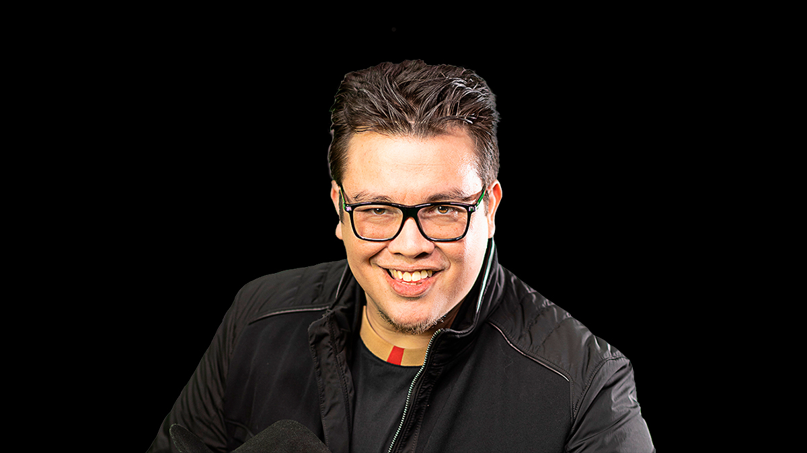
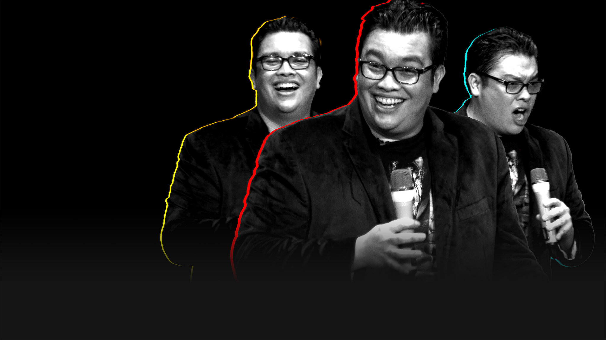

Creado por: Rodrigo Alejandro Hurtado Cortés - A01713854
Nombre completo: Franco Javier López Escamilla
Profesiones: Comediante, Músico, Escritor, Locutor, Actor de doblaje, Viajero, Amo del Universo, BOSS, Rifle, experto en anda y critico de todo.
Nacido en Cuautla, Morelos (Tierra de Heroes, benditos tus hijos, hermoso tu suelo), el 29 de abril de 1981. Tras la disolución del vínculo conyugal de sus padres el 1 de agosto de 1997, se trasladó a Monterrey, Nuevo León, para residir con su madre. Cursó estudios en la Escuela Superior de Música y Danza de Monterrey (ESMDM) (antes la Carmen Romano) durante tres años y medio, complementando su formación con una incursión breve en el ámbito de la Criminología y Psicología. Antes de incursionar en la comedia, desempeñó una variedad de ocupaciones como Mesero en KFC, Chilis, un buffet que no va a mencionar y cantante itinerante.
Hoy en dia Franco se ha vuelto uno de los comediantes más reconocidos de habla hispana en el mundo presentandose en diversos paises en los contienentes Americano, Europeo, Asiatico y Oceanico. De igual forma ha incursionado en el mundo de la TV, la música, el freestyle, el doblaje, la investigación, etc. Todo esto mientras mantiene la creación de contenido para YouTube de forma regular tiendo de forma semanal los siguientes programas: 1. La Mesa Reñoña. 2. Los Amos del Universo. 3. Toy Aburrido. 4. Psico y Psico.
Se crea la presente página web para la demostración de las competencias adquiridas en el Modulo 3. Diseño de Interfaces de la clase de Implementación del Internet de las Cosas (IoT). He tomado la desición de hacerla sobre Franco ya que es alguien que a pesar de no saberlo me ha acompañado durante casi toda mi vida desde la niñez. He acompañado y visto infinidad de programas suyos, todos sus shows, monologos, videos, música, etc. Pero no creo la presente págino solo por que me gusta su contenido, humor o carisma. Sino por que admiro su persona y su historia. Él es para mi un ejemplo de trabajo duro y perseverancia. Un hombre con pasión, sueños, quien se enamoro, tuvo una familia y comenzo un camino que lo ha llevado al éxito en la comedia gracias a la suerte como el mismo lo menciona y a muchas horas de trabajo y visión a futuro. Su paso por sus multiples trabajos, sus historias y la forma en la que se lo ve enfrentarse a las adversidades es algo que admiro mucho de el. Atentamente, un FAM, un agripino, un luperco, un viajero, y un estudiante en progreso de mejorar.